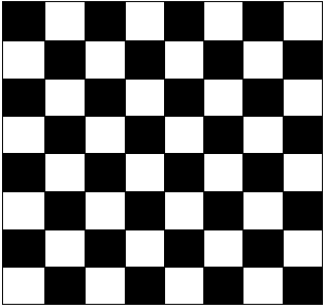

Problem #1: Be There, And Be More than Square
Background Information: On a standard 8x8 checkerboard you can identify 1,296 unique rectangles. On a
1x1 checkerboard there is just one rectangle. On a 2x2 checkerboard there are 9 unique rectangles. On a
3x3 checkerboard there are 36 unique rectangles. On a 4x4 checkerboard there are 100 unique rectangles.
On a 5x5 checkerboard there are 225 unique rectangles. On a 6x6 checkerboard there are 441 unique
rectangles. In fact, on an NxN checkerboard there are rectangles.

Programming Problem:
Input: a positive integer N less than 200, for the size of a checkerboard.
Output: the number of rectangles on the NxN checkerboard.
Example 1: Input: 6
Output: 441
Example 2: Input: 10
Output: 3025